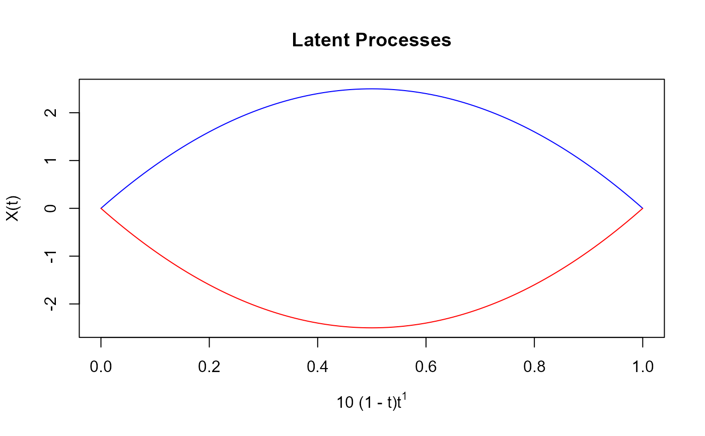
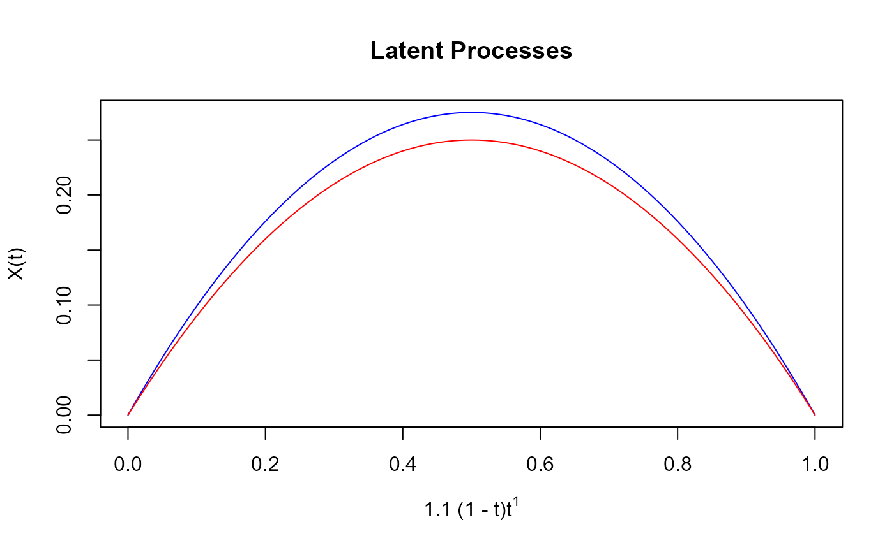
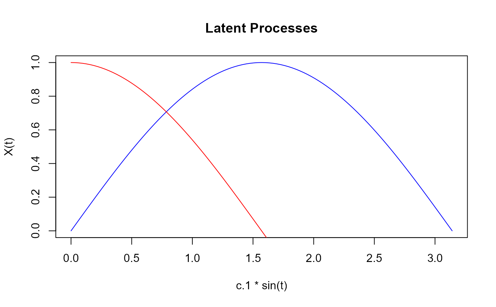
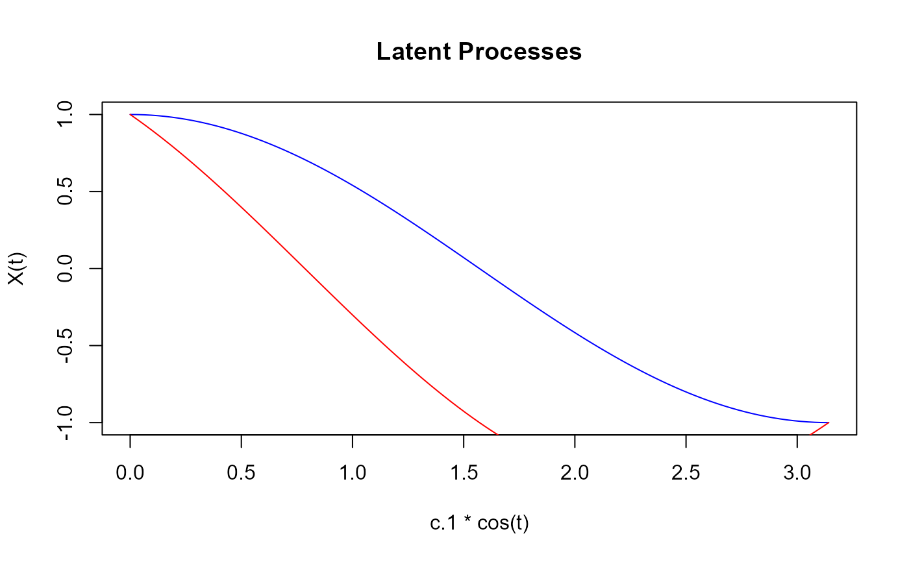

Generate Latent Processes for Functional Data
rproc2mu.RdGenerates two latent processes (mu.1 and mu.2)
based on the specified input parameters, including process type, coefficients,
exponents, and the number of evaluation points.
Arguments
- t
A numeric vector specifying the grid points (
argvals) at which the latent processes are evaluated.- process1, process2
Character strings specifying the types of the first and second latent processes, respectively. Available options include
"poly1"(by default),"poly2"(by default),"sin", and"cos".- c.1, c.2
Numeric coefficients used to scale the first and second latent processes, respectively.
- k.1, k.2
Optional numeric exponents used in the first and second latent processes, respectively. These exponents control the shape and curvature of the processes, only applicable for
"poly1"and"poly2"process types.
Value
A list containing the following elements:
mu.1: Anfdataobject representing the first latent process.mu.2: Anfdataobject representing the second latent process.
Details
The available latent process types are described as follows:
"poly1": A polynomial process of the form \(\mu_1(t) = c_1 \cdot (1 - t) \cdot t^{k_1}\), wherec.1is the scaling coefficient andk.1controls the curvature of the process."poly2": A polynomial process of the form \(\mu_2(t) = c_2 \cdot (1 - t)^{k_2} \cdot t\), wherec.2is the scaling coefficient andk.2controls the curvature of the process."sin": A sinusoidal process of the form \(\mu_i(t) = c_i \cdot \sin(t)\), wherec.iis the scaling coefficient that adjusts the amplitude of the sinusoidal wave."cos": A cosine process of the form \(\mu_i(t) = c_i \cdot \cos(t)\), wherec.iis the scaling coefficient that adjusts the amplitude of the cosine wave."sin_cos": A combination of sinusoidal and cosine processes of the form \(\mu_1(t) = c_i \cdot (\sin(t) - \cos(t))\), wherec.iis the scaling coefficient."cos_sin": A combination of cosine and sinusoidal processes of the form \(\mu_2(t) = c_i \cdot (\cos(t) - \sin(t))\), wherec.iis the scaling coefficient.
Examples
# Example 1: Generate latent processes using poly1 and poly1
np <- 101
t1 <- seq(0, 1, length.out = np)
fproces <- rproc2mu(t1, "poly1", "poly1", 10, -10, 1, 1)
plot(fproces$mu.1, col = "blue",
main = "Latent Processes",
ylim=range(cbind(range(fproces$mu.1),range(fproces$mu.2))))
lines(fproces$mu.2, col = "red")

# Example 2: Generate latent processes using poly1 and poly2
fproces <- rproc2mu(t1, "poly1", "poly2", 1.1, 1, 1, 1)
plot(fproces$mu.1, col = "blue", main = "Latent Processes")
lines(fproces$mu.2, col = "red")

# Example 3: Generate latent processes using sin and cos
t2 <- seq(0, pi, len = np)
fproces <- rproc2mu(t2, "sin", "cos", 1, 1)
plot(fproces$mu.1, col = "blue", main = "Latent Processes")
lines(fproces$mu.2, col = "red")

# Example 4: Generate latent processes using sin and cos
t3 <- seq(0, 2 * pi, len = np)
fproces <- rproc2mu(t2, "cos", "cos_sin", 1, 1)
plot(fproces$mu.1, col = "blue", main = "Latent Processes")
lines(fproces$mu.2, col = "red")
